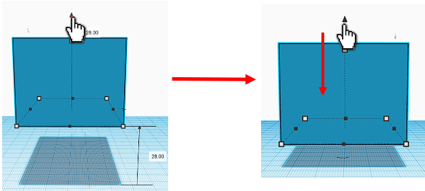

Añadir Figuras
Para poner una figura en tu plano de trabajo, sigue estos pasos sencillos:
- Buscar la Figura:
- En el menú de formas, busca la figura que quieres colocar.
- Seleccionar la Figura:
- Haz clic izquierdo sobre la figura que te gusta. Chequea la siguiente ilustración para aprender a seleccionar figuras:
- Colocar la Figura:
- En el plano de trabajo, haz clic izquierdo de nuevo para colocar la figura en el lugar que desees. Consulta la siguiente ilustración para más detalles:
Eliminar Figura
Para eliminar una figura que has colocado en el plano de trabajo, sigue estos pasos:
- Seleccionar la Figura:
- Haz clic derecho sobre la figura que deseas eliminar.
- Eliminar la Figura:
- En el menú de opciones, selecciona el botón de eliminar para quitar la figura del plano de trabajo. Consulta la siguiente ilustración:
Copiar y Pegar Figura
Para copiar y pegar una figura, sigue estos pasos:
- Seleccionar la Figura:
- Haz clic izquierdo sobre la figura que quieres copiar.
- Copiar la Figura:
- En el menú de opciones, selecciona el botón de copiar. Consulta la siguiente ilustración:
- Pegar la Figura:
- En el mismo menú de opciones, selecciona el botón de pegar. La figura copiada aparecerá en el plano de trabajo. Observa la siguiente ilustración:
Duplicar Figura
Para duplicar una figura, sigue estos pasos:
- Seleccionar la Figura:
- Haz clic izquierdo sobre la figura que quieres duplicar.
- Duplicar la Figura:
- En el menú de opciones, selecciona el botón de "Duplicar". Consulta la siguiente ilustración:
- Mover la Figura Duplicada:
- Haz clic izquierdo sobre la figura duplicada y arrástrala al lugar donde la quieras en el plano de trabajo. Observa las siguientes ilustraciones para ver el proceso en detalle:
Modificar Tamaño del Objeto
Para modificar el tamaño de un objeto en Tinkercad, puedes usar diferentes herramientas:
- Cuadrados Blancos:
- Permiten cambiar el ancho, largo y alto de la figura. Consulta la siguiente ilustración:

- Cuadrados Negros:
- Funcionan de manera similar a los cuadrados blancos, pero afectan los lados de la figura. Revisa la siguiente ilustración:
- Triángulo Superior:
- Este triángulo permite subir o bajar el objeto. Consulta la siguiente ilustración:
 - Modificación Numérica:
- Cambia la forma de la figura usando valores numéricos. Mira las ilustraciones correspondientes para ver su uso